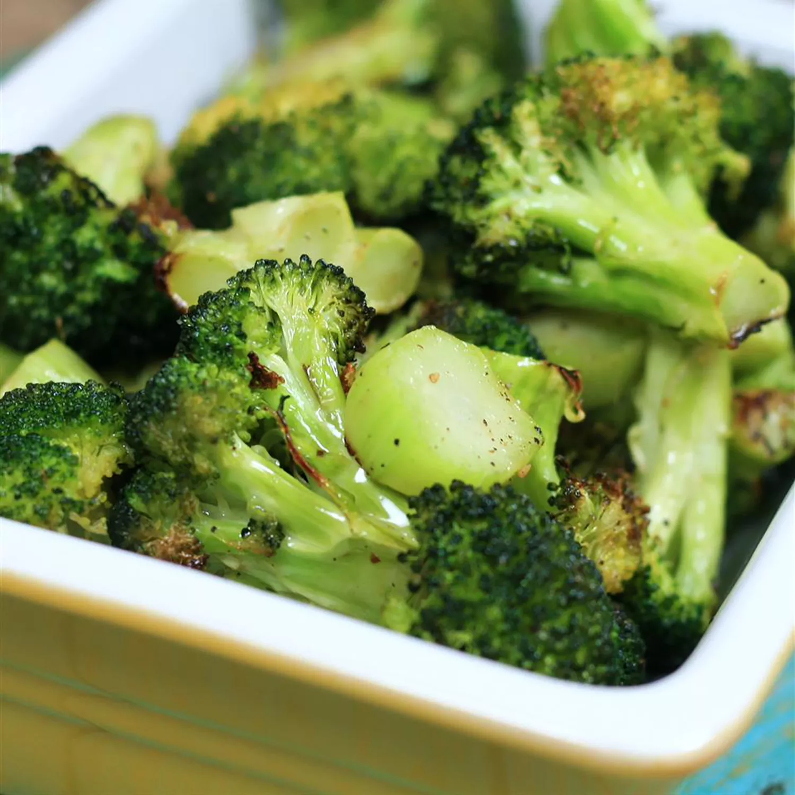

Homemade Lasagna

Description
Roasted broccoli is easy to make and has so much more flavor than boiled one.
My favorite part is the roasted sliced stem pieces.
This recipe takes about 10 minutes to prepare and 20 minutes to cook.
This recipe is for 4 servings. We will itemize the Ingredients needed to make this recipe and the steps below.
Ingredients
- 14 ounces broccoli
- 1 tablespoon olive oil
- salt and ground black pepper to taste
Steps
- Preheat the oven to 400 degrees F (200 degrees C).
- Cut broccoli florets from the stalk. Peel the stalk and slice into 1/4-inch slices.
Mix florets and stem pieces with olive oil in a bowl and transfer to a baking sheet;
season with salt and pepper.
- Roast in the preheated oven until broccoli is tender and lightly browned,
about 18 to 20 minutes.